VEKTORSKA GRAFIKA
1. VJEŽBA- izrada vlastitog fonta u programu FontForge
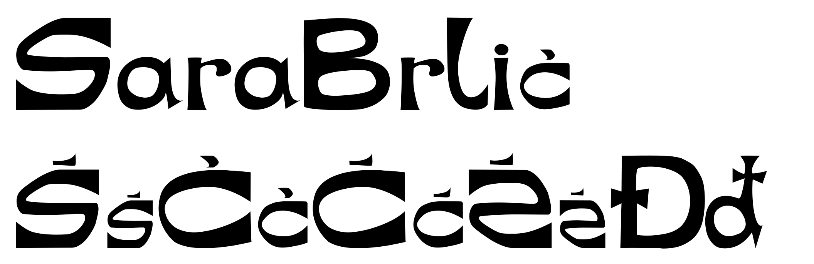
2. VJEŽBA- crtanje Bezierovih krivulja u koordinatnom sustavu
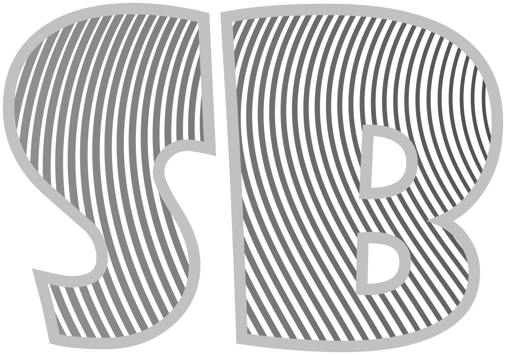
3. VJEŽBA- sustavi boja, transformacija, multipliciranje, grupiranje
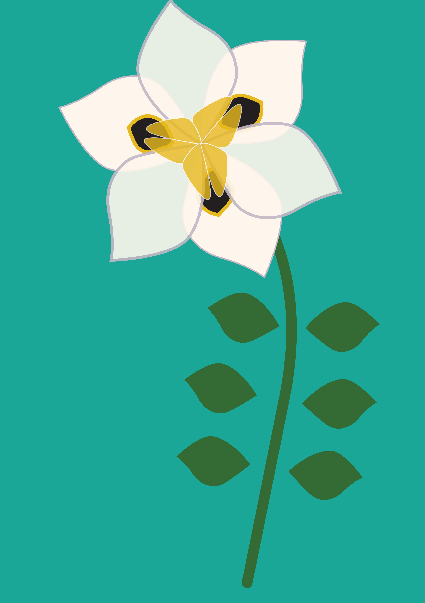
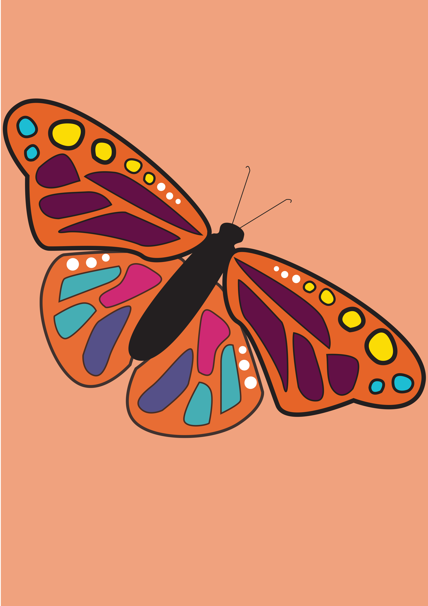
4. VJEŽBA- gradijenti, transparencija
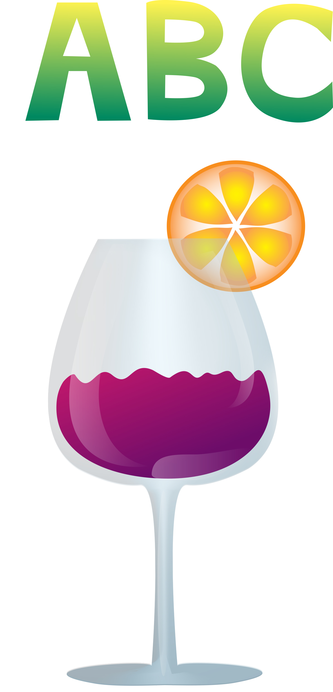
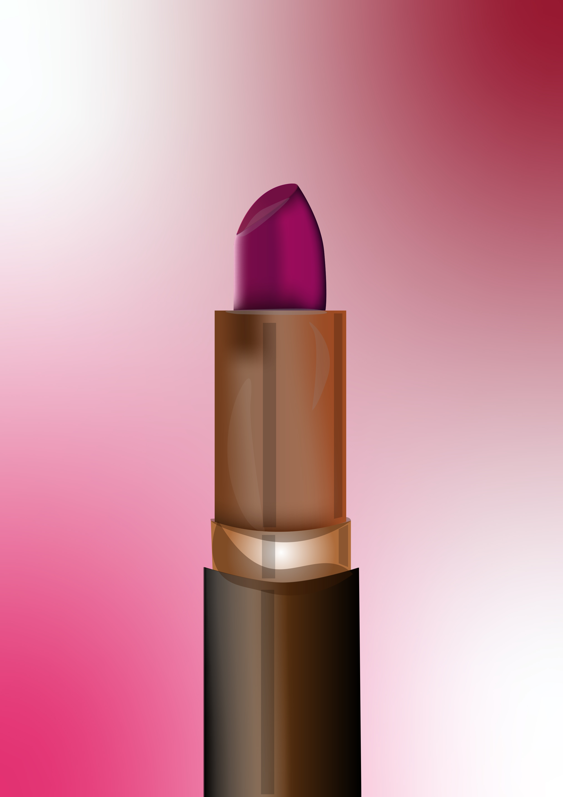
1. PROJEKTNI ZADATAK- tema iz flore i/ili faune podmorja
PIKSEL GRAFIKA 5. VJEŽBA- tehnike retuširanja fotografija 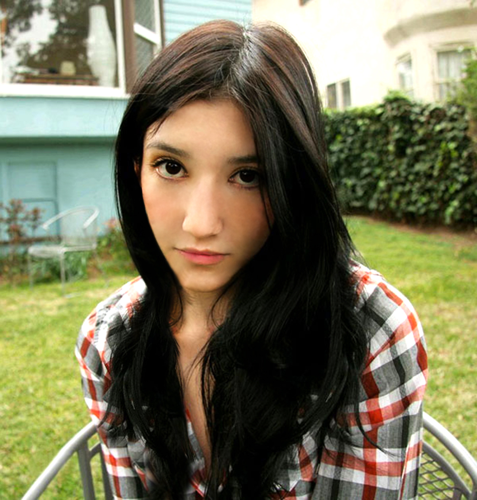 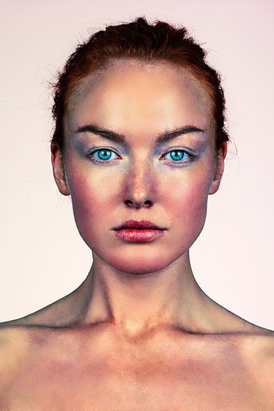 6. VJEŽBA- selekcije, maske, kanali boja, koloriranje 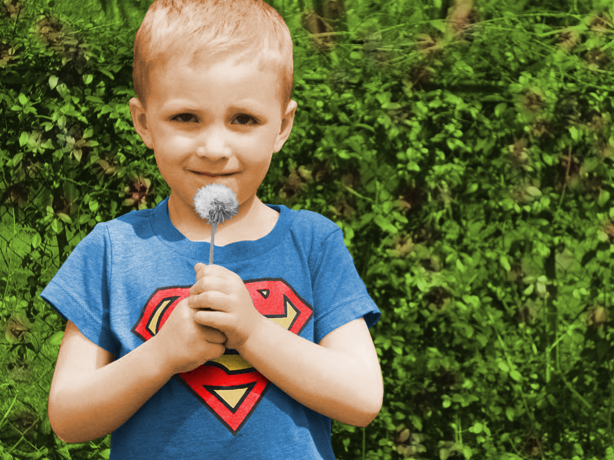 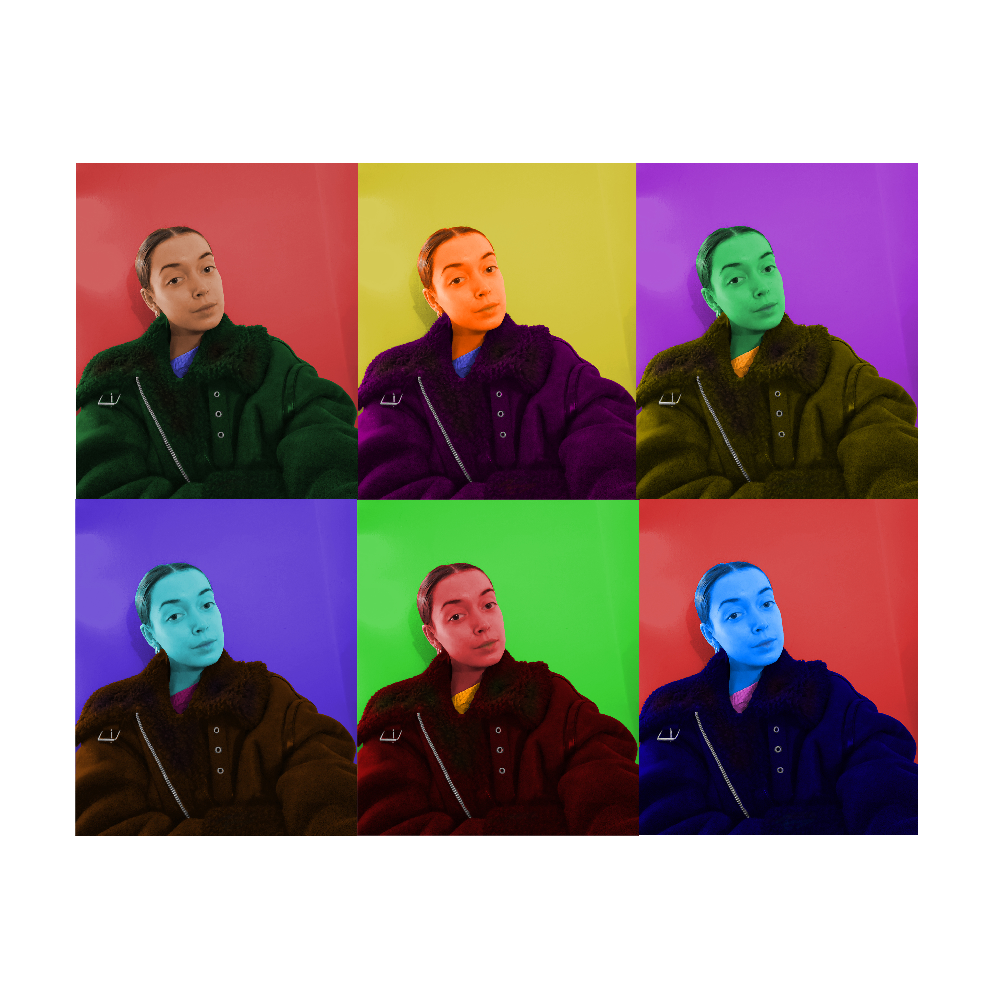 7. VJEŽBA- fotomontaža, selekcije, maske, korekcija boja 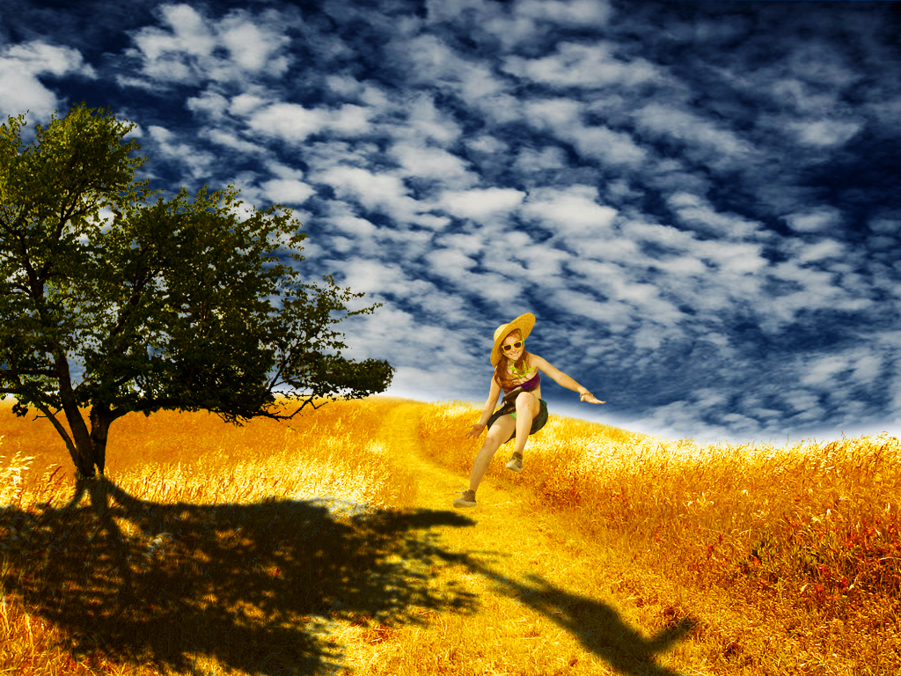 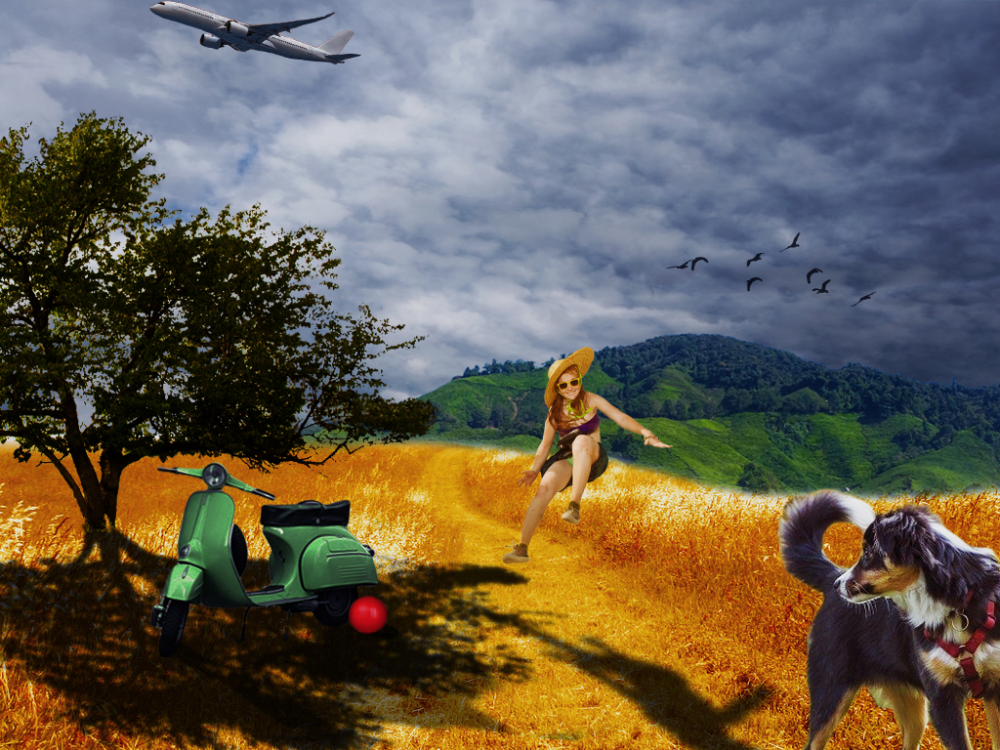 2. PROJEKTNI ZADATAK- kompozicija više fotografija koristeći tehnikeretuširanja, fotomontaže i koloriranja 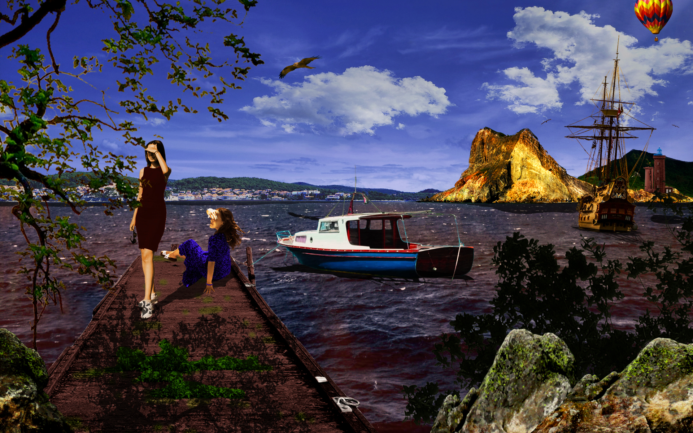
VIDEO/WEB
8. VJEŽBA- kinemagraf

 9. VJEŽBA-rezanje i spajanje video isječaka iz više izvora, video efekti, brisanje i dodavanje zvuka,
dodavanje i obrada teksta
10./11. VJEŽBA- web stranica u HTML-u i postavljanje na github
link za web stranicu
9. VJEŽBA-rezanje i spajanje video isječaka iz više izvora, video efekti, brisanje i dodavanje zvuka,
dodavanje i obrada teksta
10./11. VJEŽBA- web stranica u HTML-u i postavljanje na github
link za web stranicu